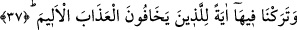

Başka bir rivâyete göre de bu mü’minler, Lut (a.s) ve onunla birlikte kurtulan on üç
kişilik âilesi veya inananları idi.
Denilmiştir ki yirmi sene müddetince Lût kavminden sadece bir kişi îman etti.
Ulemâ şöyle demiştir: Kıyâmet gününde Peygamberimiz (s.a.) yanında ümmeti
bulunduğu halde, bir peygamber yanında kavmi ile, başka bir peygamber yanında üç-on
arası bir sayıdaki inananları ile, başka bir peygamber oğlu, bir diğeri yanında bir adam
ile beraber mahşer yerine gelecektir. Bir peygamber de yalnız başına orada
bulunacaktır. Bunun sebebi ise, kavminin kendisine tâbi olmasını istediği halde hiçbir
kimsenin ona tâbi olmaması, dâvetine icâbet etmemesidir. Bu peygambere icâbet
edilmemesi de, onun böyle çok şiddetli, kötülüklerin çok yaygın, meşrû sayıldığı bir
zamanda kavmine gönderilmiş olmasıdır.
Bu âyette “mü’min” ve “Müslüman” kelimelerinin mefhûm olarak değil de doğruluk
ve şahsiyet açısından birbirlerinin yerini tutabileceğine işâret edilmektedir. Ancak
müslüman kelimesi mü’minden daha umûmîdir. Zira her mü’min müslümandır ama her
müslüman mü’min anlamına gelmeyebilir. Bunların umûmî ve hûsûsi anlamlarıyla da
bâzen birbirlerinin mürâdifi gibi kullanıldıklarına rastlanılmaktadır.
Bazı âlimler îmanın kalble tasdik olduğunu belirterek, bundan muradın, haber verilen
hükme boyun eğip kabul etme ve o hükmün doğruluğunu tasdik etme olduğunu; İslâmın
ise yine hükümleri kabul ettikten sonra onlara boyun eğip amel ile tâbi olmayı ihtivâ
ettiğini söylemişlerdir. İşte tasdîkin hakîkî olanı da budur ki azıcık bir aklı ve tefekkürü
olana bu gerçek gizli kalmaz. Bu gerçeği inkâr ise büyüklük taslamaktan başka bir şey
değildir.
37. Acı azaptan korkanlar için orada bir işâret bıraktık.
“Orada” yâni bu kentlerde onlara isâbet eden azâba delâlet etmesi için, taşları veya o
topraklardan kaynayan siyah renkte, kötü kokan bir suyu “acı azaptan korkanlar için”
yâni sağlam fıtrata ve rakik kalplere sâhip olup da bundan korkma durumunda olanlara
“bir ibret olarak bıraktık.” Biz bu ibret tablosunu onların hâricindeki katı kalpli
kimselere bırakmadık. Çünkü onlar bu ibrete önem vermez ve -bazı hacılarda müşâhede
ettiğimiz gibi- onu bir ibret olarak kabul etmezler. Nitekim pek çok hacıyı Sâlih (a.s)’ın
Medain bölgesinden geçerken bu bölgedeki ibretlerden etkilenmediklerine tanık oluruz.
Halbuki Rasûlullah (s.a.) bu gibi yerlerden geçerken ağlar, başını öne eğer ve ashabına
ağlamalarını veya ağlar gibi davranmalarını emredermiş.
Bu âyet, Allah Teâlâ’nın, dinini güçlendirenleri kurtarıp, düşmanlarından geç de olsa
öç alacağına; necat ve haşr husûsunda felâh ve rüşd sâhibleri ile birlikte oluşta dikkat
edilecek şeyin, onları sevmek ve onlara güzel bir şekilde ittibâ etmek olduğuna da